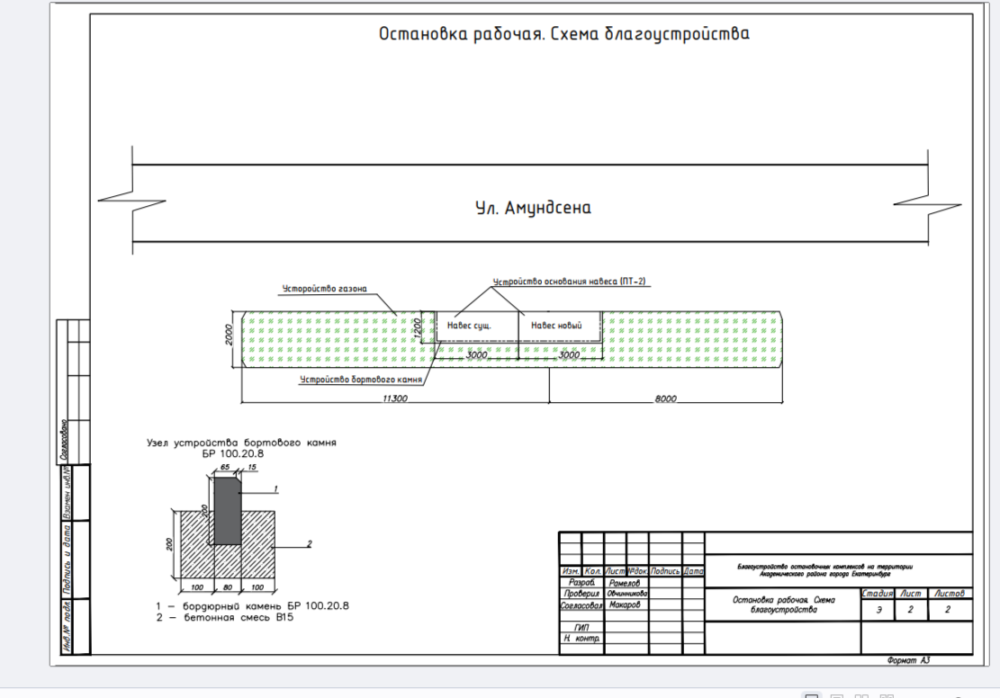
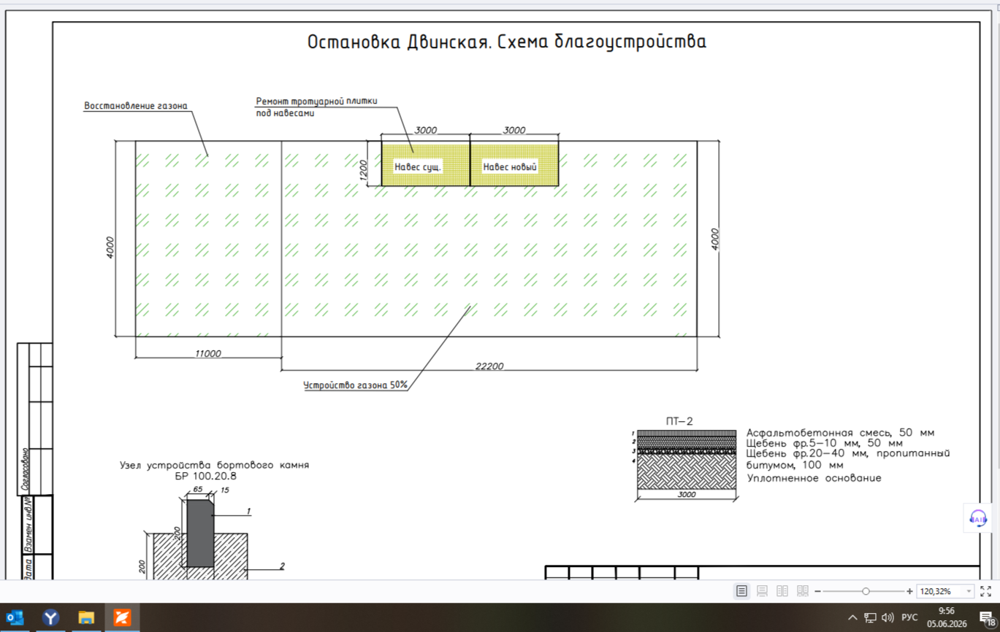
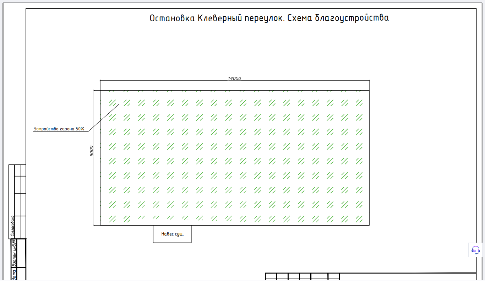

Восстановление благоустройства после выноса НТО — Академический район Екатеринбурга
Три остановки (Рабочая, Двинская, Клеверный переулок): разобрать бетонные основания снесённых киосков, вывезти бой на полигон, восстановить газоны, плитку и асфальт. Работа в нашем городе, срок до 31 октября — комфортный.
44-ФЗ · запрос котировокподача до 15.06.2026 10:00 ЕКБ — осталось 4 дняЕкатеринбург, без логистикиобеспечение заявки — нет · ОГО — нетгарантия на услуги 36 мес.
Паспорт закупки
НМЦК
650 591,06 ₽
сумма трёх смет, в т.ч. НДС 22% ≈ 117,3 тыс. ₽
Заказчик
Администрация Академического района
г. Екатеринбург · контакт: Абрарова О.А., abrarova_oa@ekadm.ru
Площадка
ЭТП ГПБ
etpgpb.ru · карточка котировки видна из ЛК (как с ГСПРОМ)
Подача заявок
до 15.06.2026
10:00 ЕКБ (08:00 МСК) · итоги 17.06.2026
Срок услуг
до 31.10.2026
с даты заключения · 4 месяца, можно планировать спокойно
Оплата
7 раб. дней
после приёмки, по факту оказанных услуг · аванса нет
Обеспечение заявки
не требуется
—
Обеспечение контракта
5%
от цены контракта (≈29 тыс. ₽ при подаче 580 тыс.)
Гарантия качества
36 мес.
100% на все услуги · отдельного обеспечения гарантии нет
Что нужно сделать — по-простому
С трёх остановок района вынесли торговые киоски. После них остались бетонные плиты-основания, стяжки и бордюры. Задача:
Разобрать бетон. Суммарно ~250 м² стяжек и плит толщиной 4–9 см (по сметам — отбойными молотками с компрессором; быстрее — мини-экскаватор с гидромолотом) плюс ~36 м старых бордюров на бетонном основании.
Вывезти и утилизировать бой. В сметах заложено ~72,5 т (3 × 24,17 т) по 353 ₽/т. Только на лицензированный полигон из госреестра (ГРОРО), талоны — предъявлять заказчику. Бой бетона — V класс опасности, лицензия на транспортирование не нужна.
Восстановить благоустройство: газоны посевные с завозом растительного грунта (~157 м²), тротуарная плитка под навесами «идентично существующей» по форме/размеру/цвету (7,3 м²), на Рабочей — основание под новый навес: конструкция ПТ-2 (асфальт 50 мм + щебень фр. 5-10 50 мм + щебень фр. 20-40, пропитанный битумом, 100 мм) и новый бортовой камень БР 100.20.8 на бетоне В15.
Отчитаться: фотофиксация каждого адреса до/после на почту заказчику, акт оказанных услуг, талоны полигона. Ежедневное присутствие ответственного представителя на месте работ.
Три объекта — три сметы
ост. Рабочая (ул. Амундсена)
226 980 ₽
самая сложная: демонтаж основания навеса и фундамента постройки (~39 м²), новое основание навеса ПТ-2 с асфальтом 7,2 м², бортовой камень 8,4 м, газон, вывоз бетона
ост. Двинская
213 278 ₽
демонтаж стяжек 88 м² (до 8 см) и бордюров 22,2 м, ремонт плитки под навесами 7,3 м² (брусчатка 60 мм), газон 62,4 м² с грунтом 9,4 м³
ост. Клеверный переулок
210 333 ₽
демонтаж стяжек 126 м² (до 7 см) и бордюров 14 м, газон 63 м² с грунтом 9,45 м³ (участок 14 × 9 м, газон 50%)
226 980,35 + 213 277,72 + 210 332,99 = 650 591,06 ₽ — сходится с НМЦК копейка в копейку. Все три сметы ресурсно-индексные (ГРАНД-Смета, I кв. 2026), внутри каждой НДС 22% и «размещение и утилизация бетона» по 8 531,28 ₽.

Рабочая (ул. Амундсена): газон, основание нового навеса (ПТ-2), бортовой камень БР 100.20.8 на бетоне В15. Участок 11,3 м + 8 м.

Двинская: участок 22,2 × 4 м, газон 50%, ремонт плитки под двумя навесами. Справа — узел конструкции ПТ-2.

Клеверный переулок: участок 14 × 9 м, устройство газона 50% (≈63 м²).
Состав затрат — сводно по трём сметам
Блок работ
Объём суммарно
В сметах ≈, ₽
Демонтаж стяжек, плит, фундаментов (компрессор + отбойные молотки, частично вручную)
~250 м², толщ. 4–9 см (~16–18 м³ бетона)
~270 000
Демонтаж бортовых камней на бетонном основании
~36 м
~42 000
Вывоз и утилизация бетонного боя (ГРОРО-полигон)
~72,5 т
~26 000
Газоны: растительная земля + подготовка почвы + посев
Налоговый бонус для ИП Дедкова. В НМЦК сидит НДС 22% (~117 тыс. ₽), мы платим 5%. Цена контракта упрощенцу не урезается — это даёт встроенный запас прочности относительно сметы заказчика.
Заказчик и конкуренция
Закупок всего
232
история администрации в TenderPlan
Падение цены
26,1%
среднее по TP; медиана по закрытым — всего 4,2%
Медиана участников
2
конкуренция умеренная, 12 закупок прошли с одним участником
Штрафы и жалобы
0
ни штрафов поставщикам, ни отклонений заявок, ни жалоб УФАС
Что это значит для цены. Заказчик «спокойный»: приёмка без придирок (0 штрафов за всю историю), типичная закупка собирает 1–3 участников, и половина контрактов уходит с падением менее 5%. Постоянного «своего» подрядчика по благоустройству не видно — победители разные (Спецтехногрупп, ИП-шники, разовые фирмы). Наша вилка −9…−13% от НМЦК уже агрессивнее медианы рынка этого заказчика — глубже опускаться смысла нет, скорее наоборот: при подаче ближе к 595–610 тыс. шансы остаются высокими.
Наша оценка затрат
Сценарий «делаем эффективно»: мини-экскаватор с гидромолотом вместо ручных отбойников, свои разнорабочие на подсобке.
Статья
Комментарий
Оценка, ₽
Демонтаж: мини-экскаватор с гидромолотом
3–5 смен × 16–20 тыс.; стяжки 4–9 см ломаются быстро
Маржа при себестоимости ≈ 300–330 тыс. ₽ (до налогов УСН/НДС 5%):
650 591 ₽(НМЦК)
маржа ≈ 320–350 тыс. · ~50%
585 000 ₽(−10%)
маржа ≈ 255–285 тыс. · 44–49%
520 000 ₽(−20%)
маржа ≈ 190–220 тыс. · 37–42%
487 943 ₽(−25%)
порог антидемпинга (ст. 37: ОИК ×1,5 = 7,5%)
450 000 ₽(−31%)
всё ещё рентабельно (~120–150 тыс.), но уже борьба за идею
Рекомендация
Подавать 565 000 – 595 000 ₽, комфортная глубина падения — до ~500 000 ₽
Закупка с очень комфортной экономикой: работа в своём городе, без обеспечения заявки и гарантийного обеспечения, сроки свободные. Демонтаж + вывоз + газон — простые понятные работы без узких компетенций, поэтому участников может быть 3–6 и падение на 10–20% вероятно. Даже у порога антидемпинга экономика остаётся достойной (~160–190 тыс.), поэтому в котировке имеет смысл сразу ставить агрессивную цену в районе −9…−13% от НМЦК. Приоритетный тендер из пары — подача до 15.06, не откладывать.
Риски
Гарантия 36 месяцев
Распространяется на все услуги, включая газон. Невзошедший/вытоптанный газон могут заставить пересевать за свой счёт. Митигация: сеять в августе-сентябре, не в жару; стоимость пересева ~15–25 тыс. — заложена в запас.
Плитка «идентично существующей»
Форма, размер и цвет — как у существующей. До подачи/начала работ съездить на Двинскую, сфотографировать плитку и проверить наличие аналога у производителей (7,3 м² — объём копеечный, но искать нестандарт долго).
Талоны полигона
Вывоз только на полигон из госреестра ГРОРО, талоны предъявляются заказчику. Серые свалки исключены — закладывать официальный тариф.
Ежедневное присутствие
На месте работ обязателен представитель исполнителя + назначение ответственного приказом в течение 2 раб. дней после контракта. Фотофиксация до/после на почту Абраровой О.А.
Чек-лист подачи (ЭТП ГПБ)
Найти котировку в ЛК ЭТП ГПБ по № 0162300005326001135 (из открытой карточки не видна — как с ГСПРОМ)
Заявка: согласие + характеристики (по Приложению 3 — стандартные сведения ст. 43) + цена
Декларации ст. 31 — галочки на площадке; СМП-преимущества нет (закупка для всех)
Обеспечение заявки не требуется — спецсчёт не трогаем
До итогов: разведка по плитке на Двинской + предварительный звонок на полигон (тариф на бой бетона)
После победы: ОИК 5% от цены (деньги или гарантия) до подписания; приказ об ответственном — в 2 раб. дня